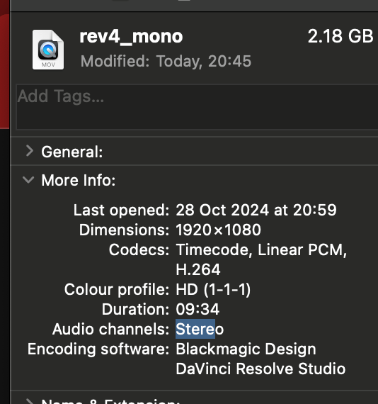

🎛️ How to Convert Audio to Mono in DaVinci Resolve and Manage File Sizes 🚀
Converting audio to mono in DaVinci Resolve is a quick way to simplify audio channels, often used when working on podcasts, interviews, or any project where stereo sound isn't necessary. However, sometimes you may notice an unexpected increase in file size after converting to mono! Let's dive into how to convert to mono and understand why file sizes might change – plus, some tips to keep those file sizes manageable.
🎬 Step 1: Import Your Audio File
-
Open DaVinci Resolve.
-
Go to the Media Pool tab.
-
Drag and drop your audio file into the Media Pool, or use the
File > Import Mediaoption.
🎚️ Step 2: Convert Audio to Mono
-
Right-click on your audio file in the Media Pool.
-
Choose Clip Attributes… 📸 Pause here for a screenshot: Highlight the Clip Attributes option.
-
In the Audio tab, under the Format column, select Mono from the dropdown.
Once you set the audio format to mono, DaVinci Resolve will only export a single channel for this audio file.
🚀 Step 3: Export Settings to Control File Size
Now that your file is in mono, let's make sure it exports efficiently.
-
Go to the Deliver tab for export settings.
-
Select your desired export format (e.g., WAV, MP3, etc.).
-
Adjust these critical settings to avoid unexpected file size increases:
-
Bit Depth: Lower bit depth can reduce file size. For example, 16-bit is usually enough for mono audio.
-
Sample Rate: Try a sample rate of 44.1kHz unless higher quality is necessary.
-
Codec: For smaller file sizes, choose MP3 or AAC (compressed formats). WAV (uncompressed) can create larger files.
📸 Pause here for a screenshot: Highlight where to find Bit Depth, Sample Rate, and Codec options in the Deliver tab.
💡 Why Does My Mono File Sometimes Get Bigger? 📏
Even though mono should technically reduce the data in your file, here are common reasons why file size might still increase:
-
Bit Depth or Sample Rate: Switching to a higher bit depth (e.g., 24-bit) or sample rate can increase file size. For example, a 24-bit mono file can be larger than a 16-bit stereo file.
-
Codec and Compression: If you export in WAV format or choose a higher-quality codec, the mono file may still be large. Compressed formats like MP3 or AAC are ideal for keeping file size low.
-
Export Format: Some formats are just inherently larger. WAV files, for instance, store uncompressed audio and will generally be bigger than MP3 or AAC.
-
Project Settings: DaVinci might apply upscaling or effects, like normalization, which can increase file size even in mono.
📉 Tips for Keeping File Sizes Manageable
-
Double-check export settings: Always review bit depth, sample rate, and codec before exporting.
-
Choose compressed formats: For smaller files, use MP3 or AAC if high-fidelity isn’t critical.
-
Avoid unnecessary effects: If you only need a basic mono conversion, skip effects that may add extra data.
🔗 Connect with Me!
I hope this guide helps you convert to mono and manage your audio file sizes more effectively! If you want to see more tips or have questions, feel free to connect with me on social media.
-
💼 LinkedIn: https://www.linkedin.com/in/rifaterdemsahin/
-
🐦 Twitter: https://x.com/rifaterdemsahin
-
🎥 YouTube: https://www.youtube.com/@RifatErdemSahin
-
💻 GitHub: https://github.com/rifaterdemsahin
Happy editing! 🎉

Imported from rifaterdemsahin.com · 2024